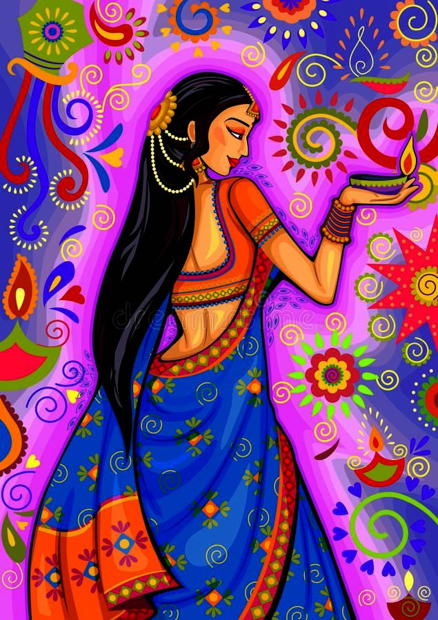
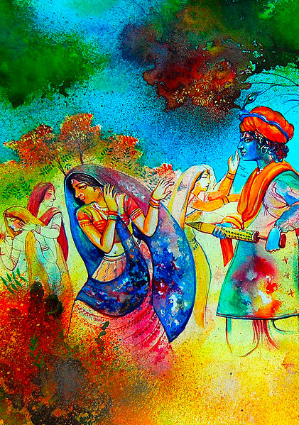
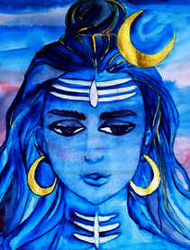
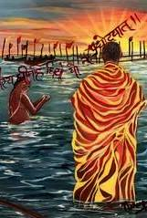

Maha Shivaratri, 'The Great Night of Shiva') is a Hindu festival celebrated annually in honour of the deity Shiva,
between February and March. According to the Hindu calendar, the festival is observed on
the fourteenth day of the dark (waning) half of the lunar month of Phalguna or Magha.

Kumbh Mela, also called Kumbha Mela, in Hinduism, religious festival that is celebrated
four times over the course of 12 years, the site of the observance rotating between four
pilgrimage places on four sacred rivers—at Haridwar on the Ganges River, at Ujjain on the Shipra,
at Nashik on the Godavari, and at Prayag.